|
4-3-3
|
Ghana | 1 | - | 0 | Panama |
3-4-3
|
| HT 0-0 | ||||||
|
FIFA World CupThursday 18 June 2026
|
||||||
- Venue
- Toronto Stadium
- Attendance
- 42,942
- Referee
- Glenn Nyberg
Yellow card16'
C. Yirenkyi
Substitution46'
L. Zigi
B. Asare
- 2
Substitution58'
K. Sulemana
B. Thomas-Asante
E. Nuamah
A. Fatawu
Substitution78'
E. Owusu
K. Sibo
Substitution87'
J. Ayew
P. Adu
Goal90+5'
C. Yirenkyi
Assist: B. Thomas-Asante
Whistle45+6'
45+6'
- 2
Substitution63'
C. Waterman
J. Fajardo
C. Martínez
A. Londoño
Yellow card72'
C. Blackman
Substitution74'
J. Rodríguez
I. Díaz
Substitution90'
C. Blackman
A. Godoy
Yellow card90+9'
C. Harvey
Ghana | |
|---|---|
Goalkeeper | |
| 1 | L. Zigi 46' |
Defender | |
| 4 | J. Adjetey |
| 14 | G. Mensah |
| 18 | J. Opoku |
| 26 | M. Senaya |
Midfielder | |
| 3 | C. Yirenkyi 16'90+5' |
| 15 | E. Owusu 78' |
| 22 | K. Sulemana 58' |
Forward | |
| 9 | J. Ayew 87' |
| 11 | A. Semenyo |
| 24 | E. Nuamah 58' |
Substitutes | |
| 7 | A. Fatawu 58' |
| 8 | K. Sibo 78' |
| 10 | B. Thomas-Asante 58' |
| 16 | B. Asare 46' |
| 25 | P. Adu 87' |
Panama | |
Goalkeeper | |
| 22 | O. Mosquera |
Defender | |
| 3 | J. Córdoba |
| 13 | J. Ramos |
| 16 | A. Andrade |
Midfielder | |
| 2 | C. Blackman 72'90' |
| 11 | Y. Bárcenas |
| 14 | C. Harvey 90+9' |
| 23 | A. Murillo |
Forward | |
| 6 | C. Martínez 63' |
| 7 | J. Rodríguez 74' |
| 18 | C. Waterman 63' |
Substitutes | |
| 10 | I. Díaz 74' |
| 17 | J. Fajardo 63' |
| 20 | A. Godoy 90' |
| 24 | A. Londoño 63' |


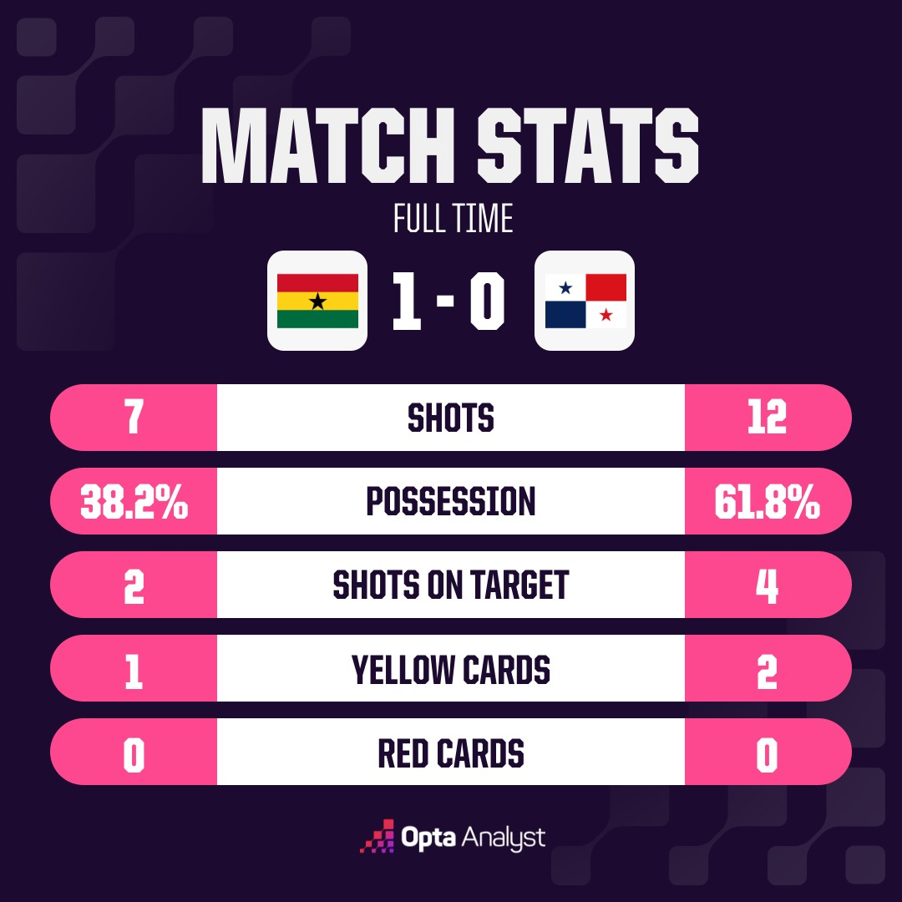
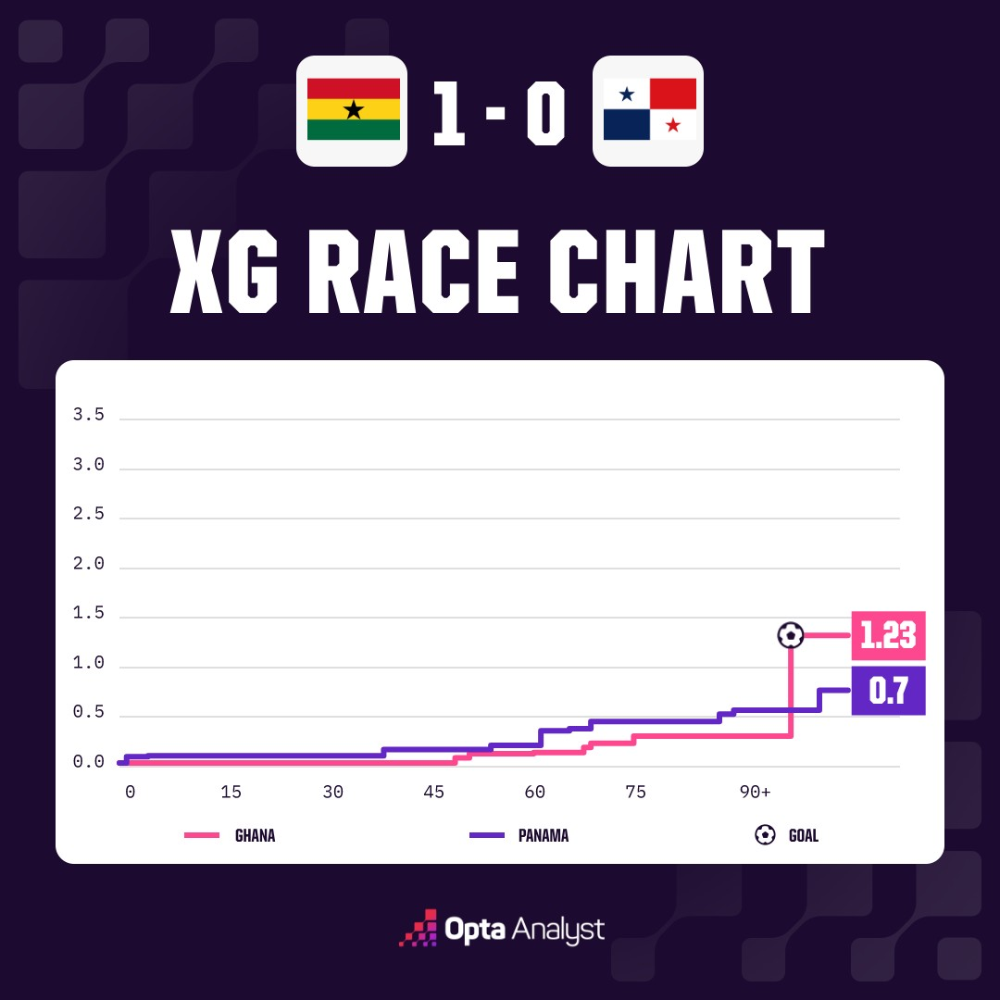
103'
Panama have lost their last 4 games in the FIFA World Cup, their longest losing streak in the competition (since at least 1965/1966).
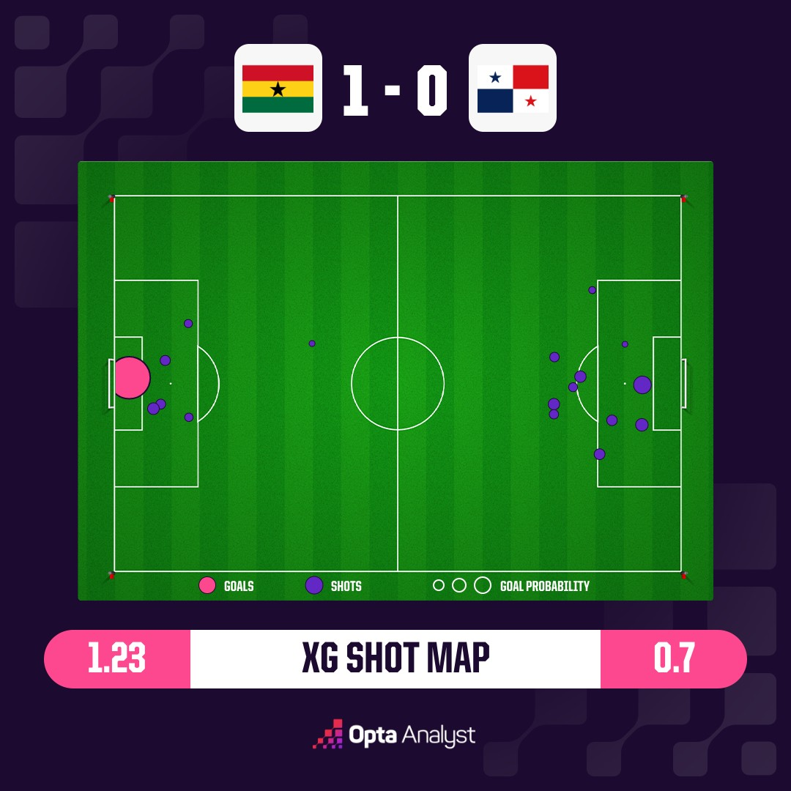
90+12'
Ghana WIN! It’s all over at Toronto Stadium, with Ghana coming out on top 1-0 over Panama, thanks to goal from Caleb Yirenkyi.
90+11'
A free-kick to Panama, as Prince Adu goes in and fouls Aníbal Godoy. However, Ghana will not mind giving one away in this area too much, with plenty of distance to their goal.
90+9'
That is a booking for Carlos Harvey, who has received their first yellow card. They are not happy with the decision, but it is done now, and they will have to be careful for the rest of this game.
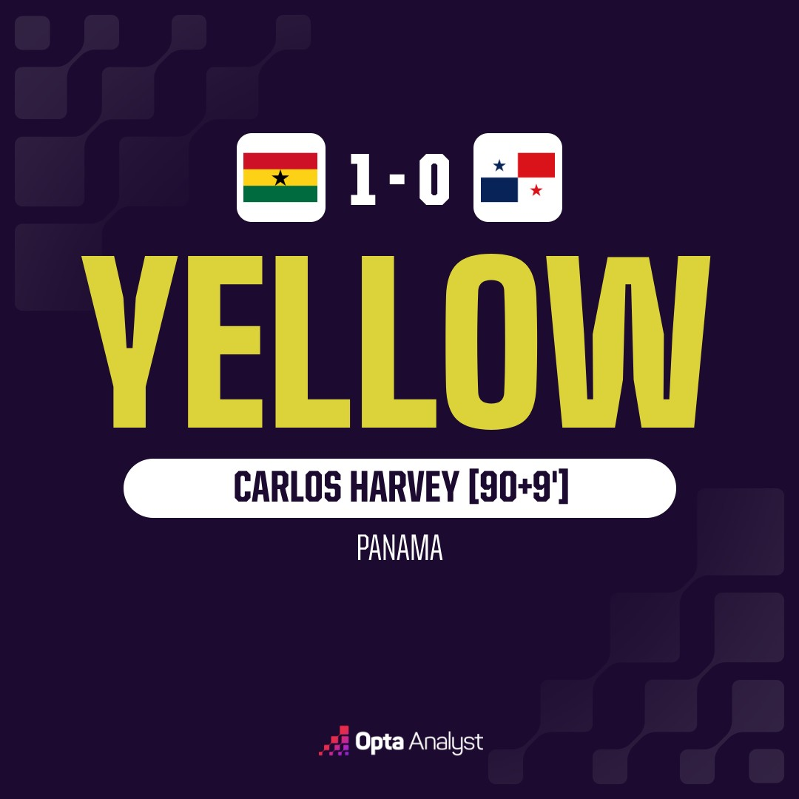
90+9'
Free-kick! A foul from Carlos Harvey on Benjamin Asare. It is well away from Panama’s goal, so it is unlikely to result in a chance for Ghana.
90+9'
MISS! How has that not gone in? A complete lack of composure shown from Ismael Díaz, who squanders a golden chance for Panama, whose coach looks on frustrated from the touchline. A real let off for Ghana!
90+8'
Foul! A free-kick now in a dangerous area for Panama, after José Córdoba is fouled by Prince Adu. Can Panama make the most of this opportunity?
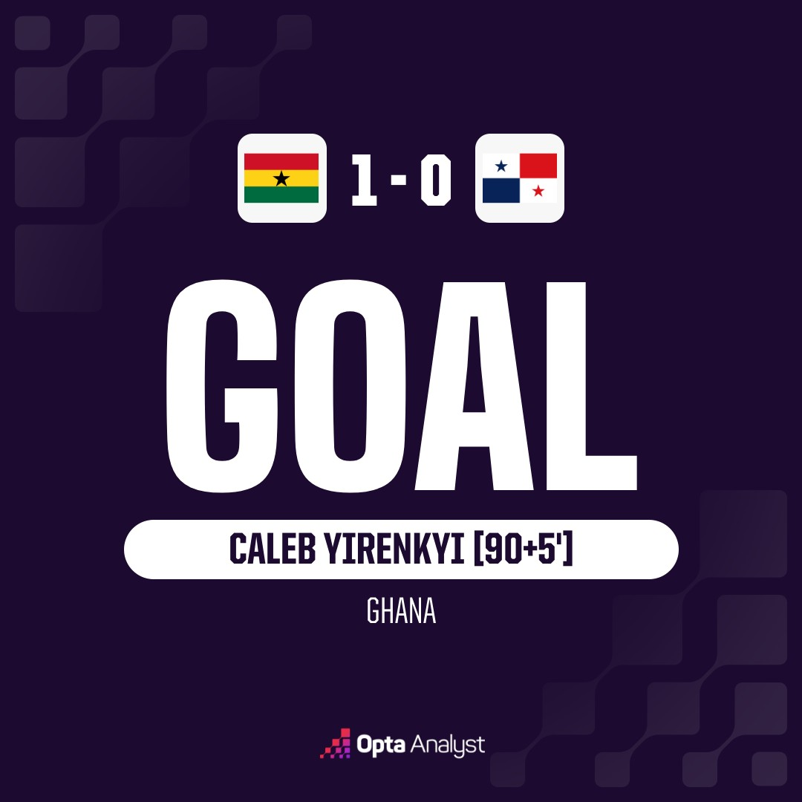
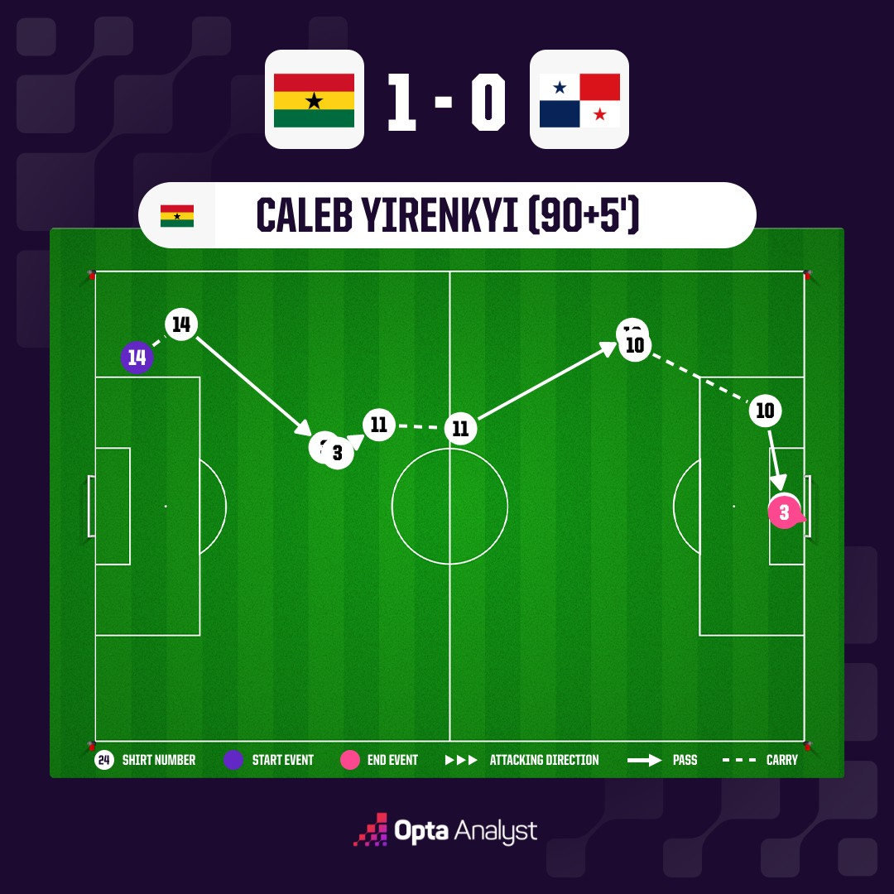
90+5'
Ghana ended a run of 241 minutes without a goal in the FIFA World Cup, their longest since going 233 minutes without scoring from 22nd June 2006 to 13th June 2010.
90+5'
GOAL! What a moment for Caleb Yirenkyi, who has found the back of the net from inside the 18-yard box to put Ghana ahead in the closing stages. Will that be enough for Ghana to claim the victory?
90+1'
Panama are making a tactical change. César Blackman is leaving the field and in their place comes Aníbal Godoy – we will soon see if this switch has the desired impact.
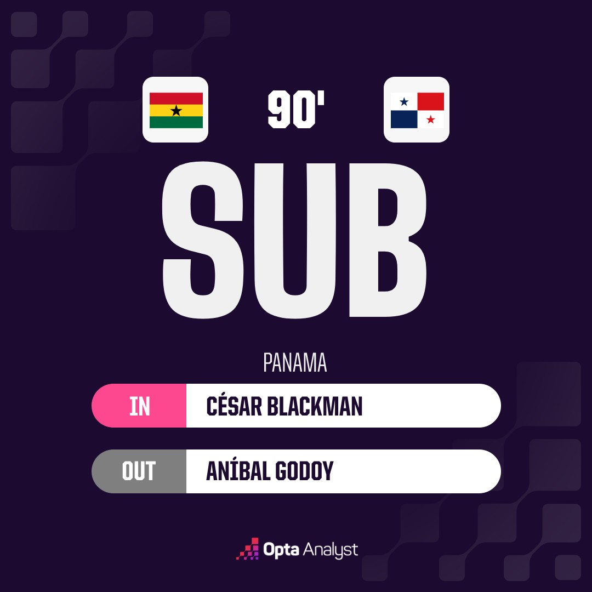
89'
Panama offside trap works a treat as they step up and catch Brandon Thomas-Asante offside. Ghana are searching for a goal, but their players will need to play smarter to keep themselves on the right side of the line.
87'
A substitution for Ghana sees Jordan Ayew replaced by Prince Adu. There does not appear to be any obvious sign of an injury, so that is a tactical switch.
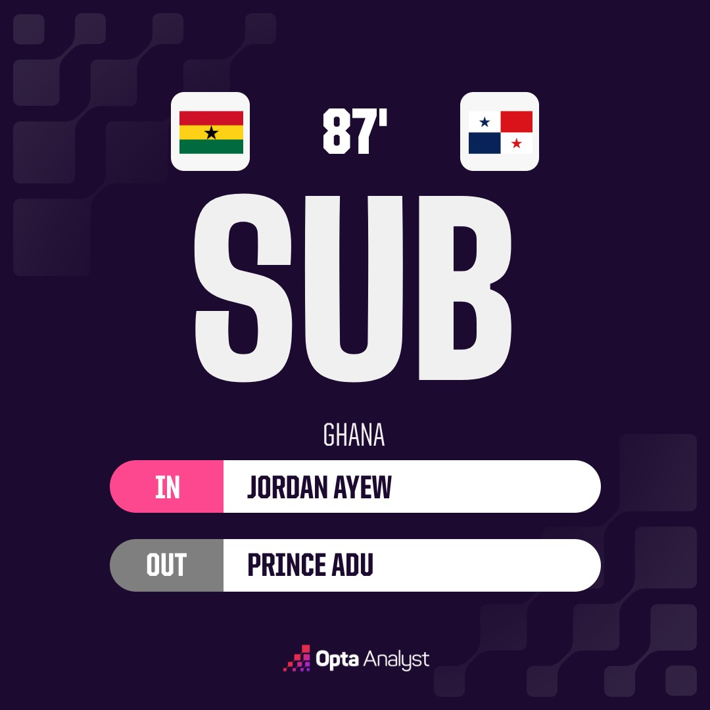
87'
A chance goes begging as Yoel Bárcenas gets off a shot that does not hit the target. They might have done better with that one, but instead it is a goal-kick to Ghana.
85'
That was hopeful! A bit of a punt from Ismael Díaz, who goes for goal from distance, but Benjamin Asare makes the save.
83'
Neither team has had a shot in the past 10 minutes, as this match just enters something of a down period. Panama have seen more of the ball, with 56 per cent possession, but Ghana are keeping them away from goal. There is still a chance the match will spark into life, though.
79'
Andrés Andrade goes in on Abdul Fatawu and concedes a foul. The free-kick is not in a particularly dangerous area from Panama’s viewpoint, though.
78'
A foul from Jordan Ayew on Jiovany Ramos sees Panama win a free-kick, but it is not in a dangerous position, so Ghana should be confident they can defend it easily enough.
78'
A substitution for Ghana sees Elisha Owusu replaced by Kwasi Sibo. There does not appear to be any obvious sign of an injury, so that is a tactical switch.
76'
A free-kick to Panama, as Antoine Semenyo goes in and fouls Amir Murillo. However, Ghana will not mind giving one away in this area too much, with plenty of distance to their goal.
76'
With 15 minutes of normal time remaining, it is Panama who have had more of the ball, with 63.47% compared to Ghana’s 36.53%.
75'
A foul from Jordan Ayew on Amir Murillo sees Panama win a free-kick, but it is not in a dangerous position, so Ghana should be confident they can defend it easily enough.
74'
Panama are making a tactical change. José Rodríguez is leaving the field and in their place comes Ismael Díaz – we will soon see if this switch has the desired impact.
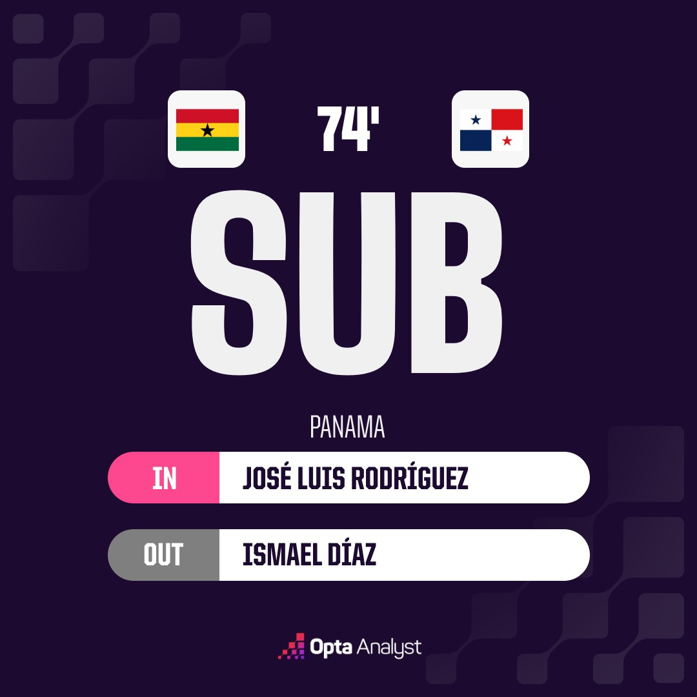
73'
MISS! A shot from Jonas Adjetey ends up being off target. They might have done a bit better with that one, but it remains Ghana 0-0 Panama.
72'
Yellow card! César Blackman will have to be careful from now on after they are cautioned.
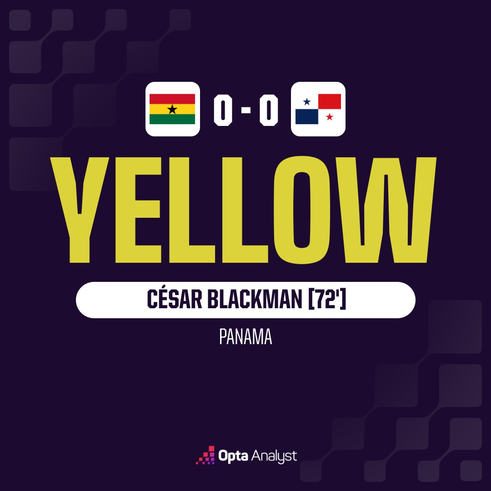
72'
A free-kick in a dangerous position now for Ghana, after a foul from César Blackman on Abdul Fatawu. Can Ghana make Panama pay for that rashness from César Blackman?
67'
A chance goes begging as Jiovany Ramos gets off a shot that does not hit the target. They might have done better with that one, but instead it is a goal-kick to Ghana.
67'
That might have been going in! A fantastic block from Andrés Andrade, who gets in the way of a goal-bound effort from Antoine Semenyo. Would the goalkeeper have been beaten? We will never know.
66'
That is a disappointing effort from Antoine Semenyo, who went for glory but got their attempt wrong, and the shot sailed off target. A frustrating moment for Ghana.
66'
Just over an hour played, so let’s check on the shot count for each side. Ghana have had 3, getting 1 on target. Panama, meanwhile, have had 2 efforts on target, and 7 overall.
64'
Chance! A shot from inside the area from César Blackman was heading in, but Benjamin Asare makes a fine stop to keep it out. A big save from the Ghana shot-stopper!
63'
A substitution for Panama sees Cristian Martínez replaced by Azarías Londoño. There does not appear to be any obvious sign of an injury, so that is a tactical switch.
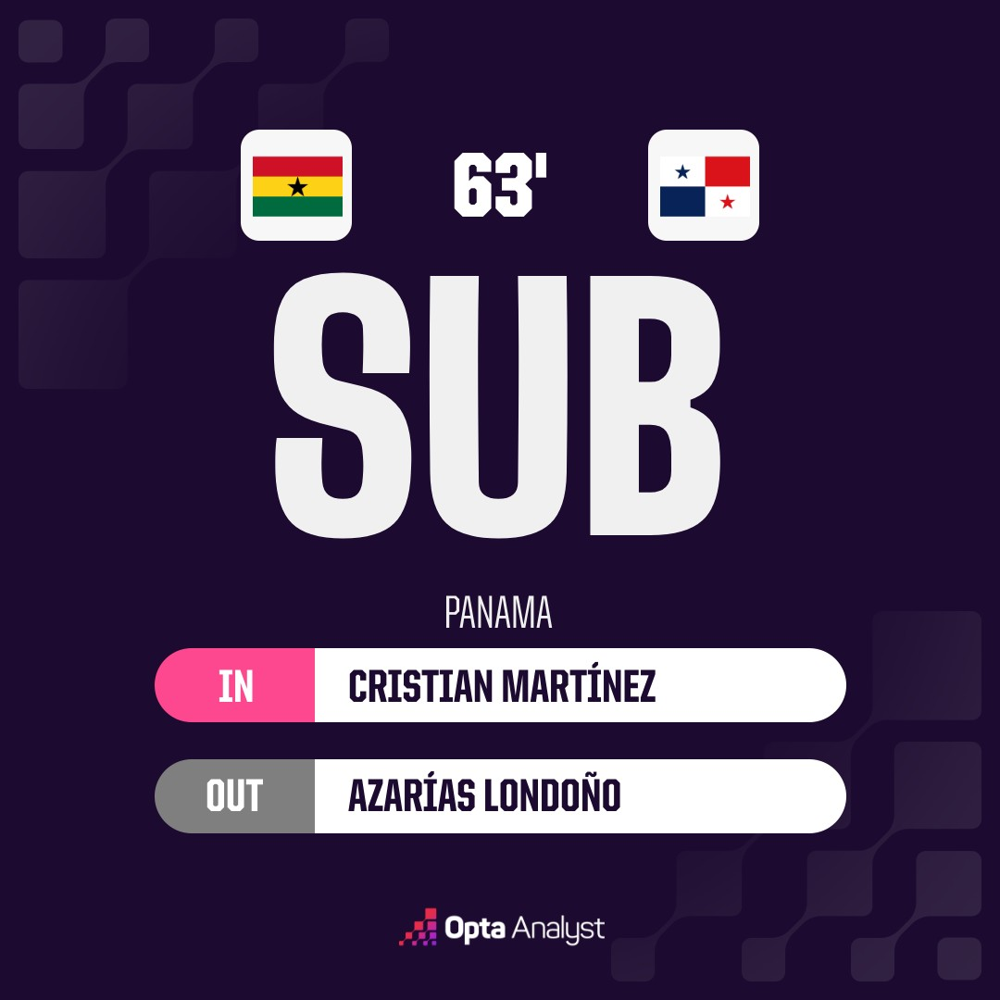
63'
The Panama manager is looking to the substitutes’ bench, bringing on José Fajardo in place of Cecilio Waterman. Will the change make a difference? Let’s find out!
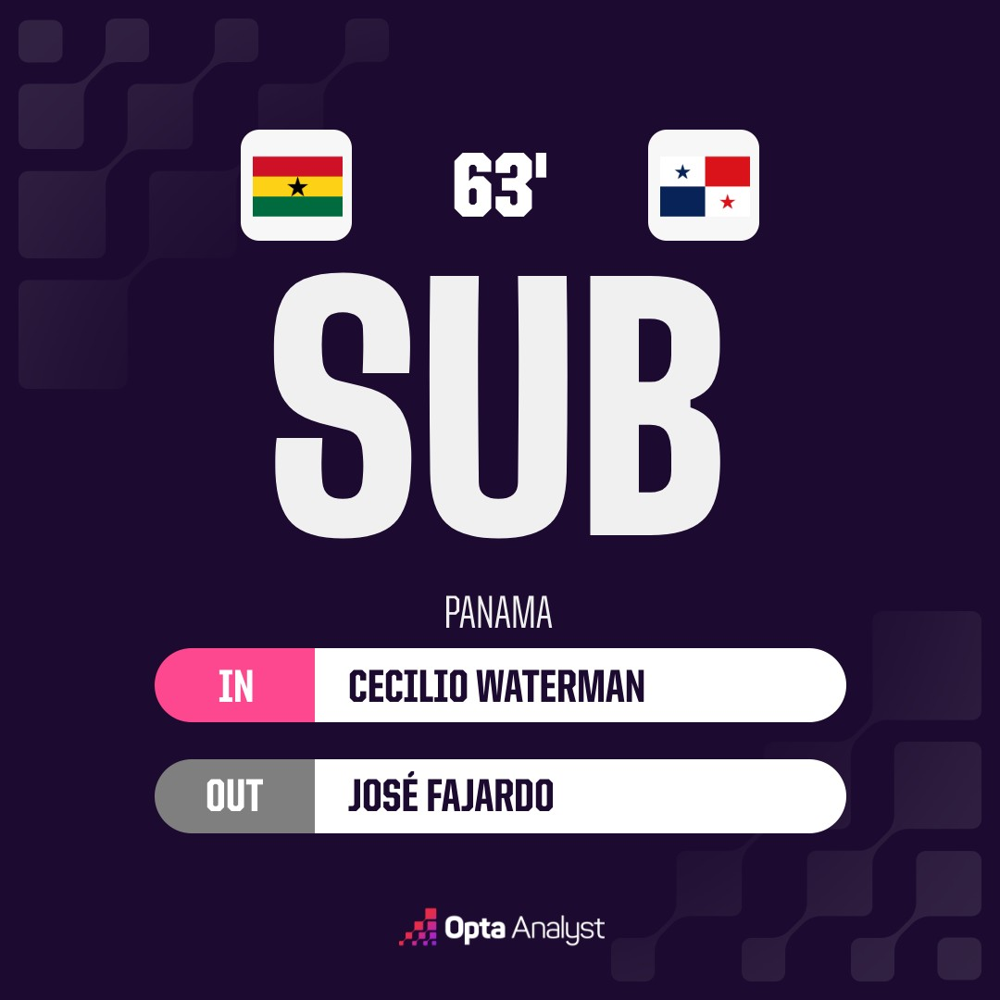
62'
Corner! Ghana are pushing for a goal and now they have an opportunity from this set-piece.
60'
What a miss! That was a huge chance for Cristian Martínez, but they have failed to convert. What an opportunity that was for Panama.
60'
No luck! Carlos Harvey takes on a shot that, had they got it right, might have been set to test the goalkeeper, but instead it is sent off target and Ghana come away unscathed.
60'
There is plenty of possession for Panama, with 65.40% compared to Ghana 34.60 % in the last 15 minutes. However, Panama have not been able to turn that dominance of the ball into a goal.
59'
A chance goes begging as Abdul Fatawu gets off a shot that does not hit the target. They might have done better with that one, but instead it is a goal-kick to Panama.
58'
Ghana are making a tactical change. Ernest Nuamah is leaving the field and in their place comes Abdul Fatawu – we will soon see if this switch has the desired impact.
58'
Ghana are making a tactical change. Kamaldeen Sulemana is leaving the field and in their place comes Brandon Thomas-Asante – we will soon see if this switch has the desired impact.
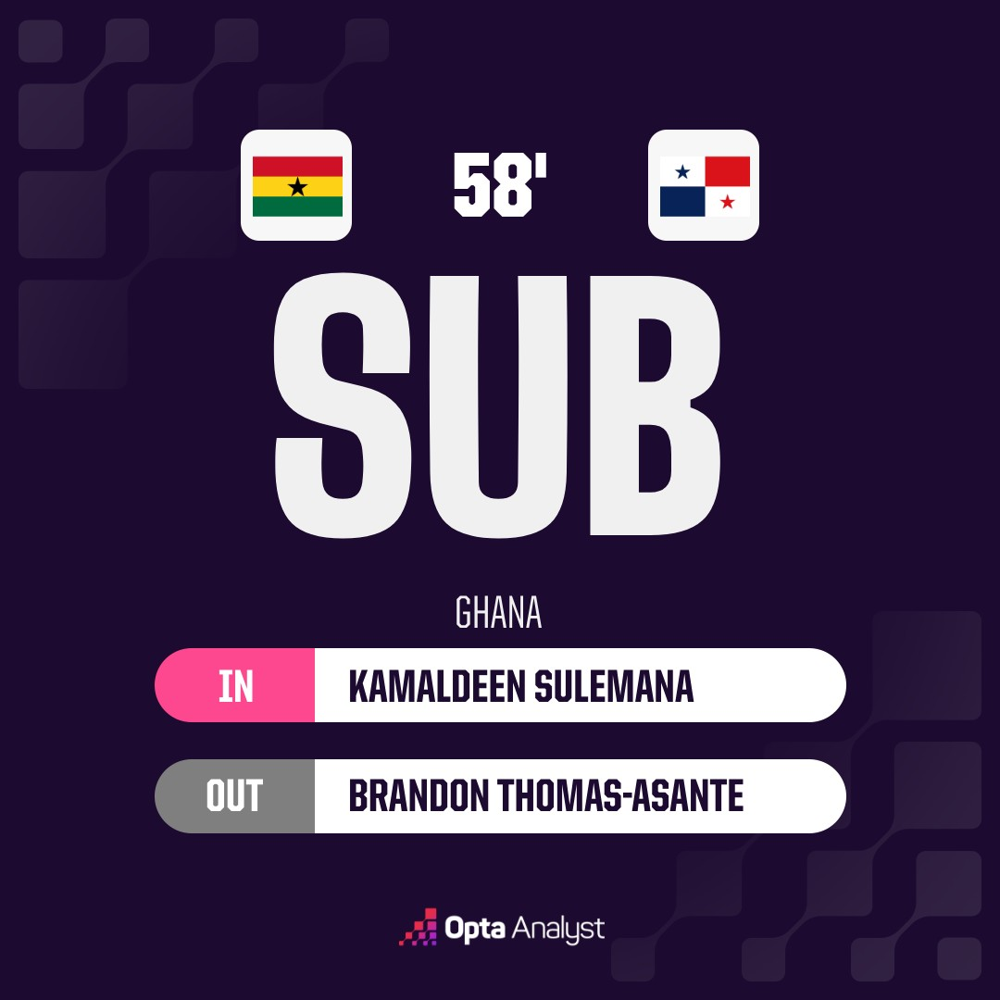
53'
A chance now for Panama to get a good delivery into the box, after the ball is diverted behind for a corner. Panama have been pushing for what would be a key goal, but Ghana have stood firm so far.
53'
BLOCK! An intervention from Caleb Yirenkyi might have just prevented a goal, with the defending player getting in the way of an attempt from Yoel Bárcenas. Solid defending there!
51'
A foul from Kamaldeen Sulemana on Amir Murillo sees Panama win a free-kick, but it is not in a dangerous position, so Ghana should be confident they can defend it easily enough.
50'
That is a disappointing effort from Caleb Yirenkyi, who went for glory but got their attempt wrong, and the shot sailed off target. A frustrating moment for Ghana.
49'
Free-kick! A foul from Cristian Martínez on Gideon Mensah. It is well away from Panama’s goal, so it is unlikely to result in a chance for Ghana.
48'
CLOSE! Jonas Adjetey gets into a decent shooting position inside the Panama area, and manages to find space to get an effort off. However, Orlando Mosquera is equal to it.
47'
A free-kick to Ghana, as Carlos Harvey goes in and fouls Jordan Ayew. However, Panama will not mind giving one away in this area too much, with plenty of distance to their goal.
46'
An enforced substitution for Ghana, as Lawrence Zigi cannot carry on after sustaining an injury. Benjamin Asare has hastily warmed up and now made their way onto the pitch in Lawrence Zigi's place.
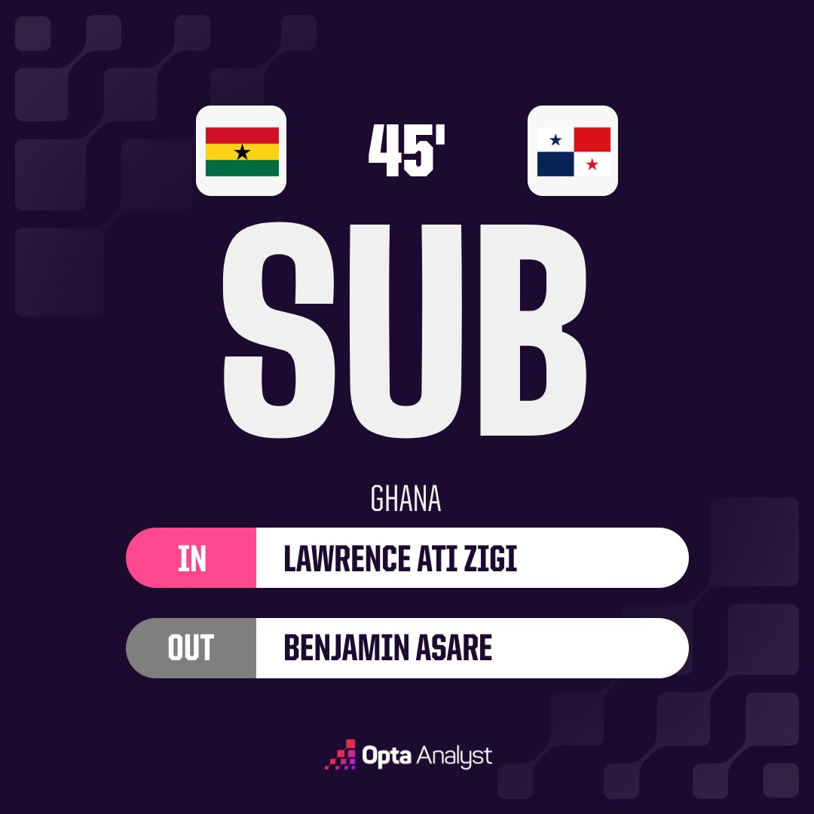
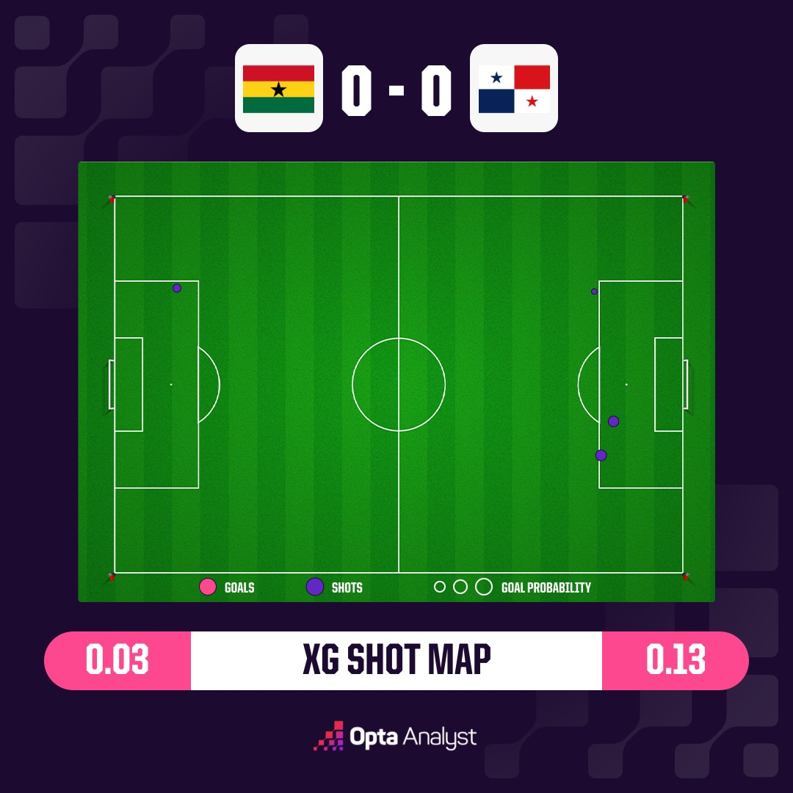
45+6'
Half-time! The referee blows the whistle and it is time for the interval. As we reach the break it is Ghana 0-0 Panama at Toronto Stadium.
45+5'
Good play from Antoine Semenyo, who draws a foul from José Córdoba to hand Ghana a free-kick in a dangerous position. Will they create something from this set-piece?
45+3'
Not much goalmouth action to speak of in this period of the game, with no attempts made from either side. This game could spark at any moment, however. It is Panama who have had more of the ball, controlling 55 per cent possession in the last 10 minutes.
45+1'
Jiovany Ramos goes in on Jordan Ayew and concedes a foul. The free-kick is not in a particularly dangerous area from Panama’s viewpoint, though.
45+1'
That’s offside! A switched-on defensive line from Panama, as they step up at the right time to catch Antoine Semenyo offside, and the assistant referee’s flag is up.
44'
A foul from Andrés Andrade on Ernest Nuamah sees Ghana win a free-kick, but it is not in a dangerous position, so Panama should be confident they can defend it easily enough.
41'
Ghana have not had a shot so far in this game.
38'
In the last 15 minutes, it is Panama who have dominated the ball, having seen 72.50% of the possession, yet they have not been able to go and turn that into a goal just yet, with their opponents standing firm.
38'
That is a disappointing effort from Jiovany Ramos, who went for glory but got their attempt wrong, and the shot sailed off target. A frustrating moment for Panama.
37'
Not much goalmouth action to speak of in this period of the game, with no attempts made from either side. This game could spark at any moment, however. It is Panama who have had more of the ball, controlling 67 per cent possession in the last 10 minutes.
36'
Panama have had plenty of the ball in the last 15 minutes, with 66.67% possession compared to just 33.33% for their opponents. However, there has not been any shot to come from that possessional dominance, which will be a huge frustration for their coach.
35'
It has been 30 minutes since Panama last attempted a shot in this game.
34'
A free-kick to Ghana, as Carlos Harvey goes in and fouls Lawrence Zigi. However, Panama will not mind giving one away in this area too much, with plenty of distance to their goal.
30'
Good play from Caleb Yirenkyi, who draws a foul from Carlos Harvey to hand Ghana a free-kick in a dangerous position. Will they create something from this set-piece?
28'
Free-kick! A foul from Marvin Senaya on César Blackman. It is well away from Ghana’s goal, so it is unlikely to result in a chance for Panama.
27'
Not much goalmouth action to speak of in this period of the game, with no attempts made from either side. This game could spark at any moment, however. It is Panama who have had more of the ball, controlling 62 per cent possession in the last 10 minutes.
21'
That’s offside! A switched-on defensive line from Panama, as they step up at the right time to catch Kamaldeen Sulemana offside, and the assistant referee’s flag is up.
20'
It’s been tight so far, and Panama are making sure it stays that way with strong defensive discipline and well-timed clearances.
20'
In the last 15 minutes, it is Panama who have dominated the ball, having seen 69.27% of the possession, yet they have not been able to go and turn that into a single shot, so there is no imminent sign of a goal.
16'
The referee goes to their pocket and pulls out a yellow card, which is brandished in the direction of Caleb Yirenkyi. Will they be able to avoid a second booking?
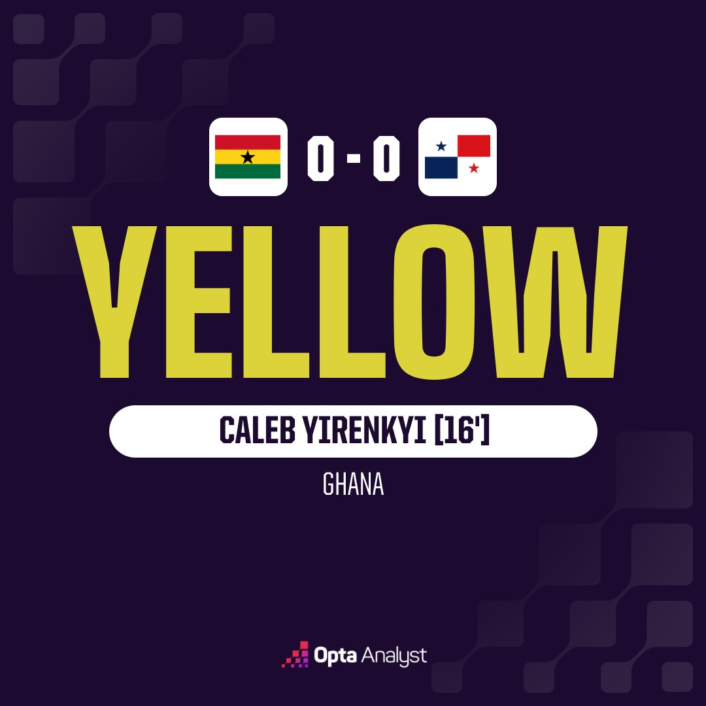
16'
Caleb Yirenkyi goes in on Yoel Bárcenas and concedes a foul. The free-kick is not in a particularly dangerous area from Ghana’s viewpoint, though.
16'
Panama are having plenty of the ball, with 71.18% possession in the last 15 minutes. However, they have been unable to transfer that possessional dominance into a goal during that period.
15'
Neither team has had a shot in the past 10 minutes, as this match just enters something of a down period. Panama have seen more of the ball, with 77 per cent possession, but Ghana are keeping them away from goal. There is still a chance the match will spark into life, though.
15'
A rash challenge from Carlos Harvey, who sends Kamaldeen Sulemana tumbling, giving Ghana a free-kick. It is not in a threatening position, but it gives them a chance to get back on the ball.
12'
A foul from Antoine Semenyo on Amir Murillo sees Panama win a free-kick, but it is not in a dangerous position, so Ghana should be confident they can defend it easily enough.
8'
That’s offside! A switched-on defensive line from Ghana, as they step up at the right time to catch César Blackman offside, and the assistant referee’s flag is up.
5'
Great block from Marvin Senaya, as they get in the way of an attempt from César Blackman that might have been set to cause the goalkeeper some problems. Solid defending from the Ghana player.
2'
SHOT! Cecilio Waterman manages to get a shot off from inside the area, but although it was heading in, they cannot get enough on it to beat Lawrence Zigi, who makes the save.
1'
Jordan Ayew makes a run in behind but the Panama defensive line were alert, and stepped up in time to catch them offside. That run just needed to be timed better.
1'
And we are off! Strap in, folks, for this mouthwatering encounter between Ghana and Panama at Toronto Stadium.
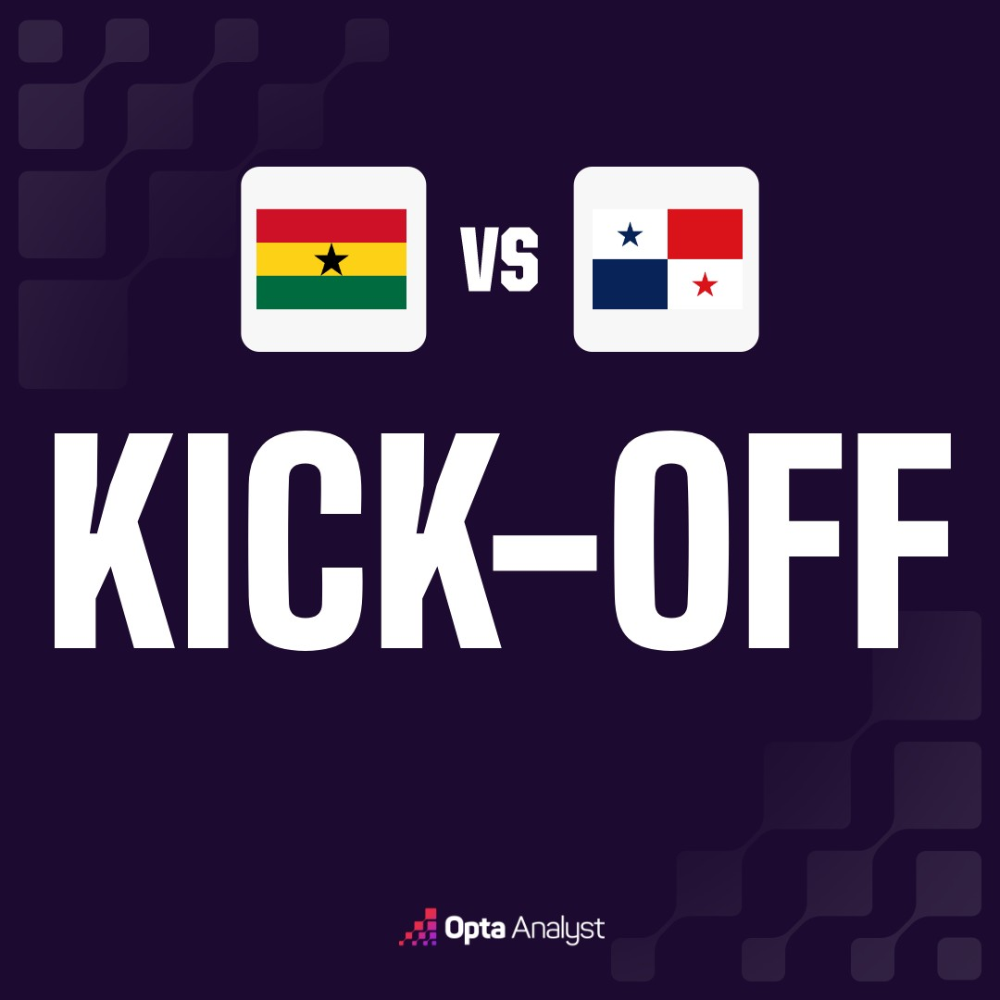
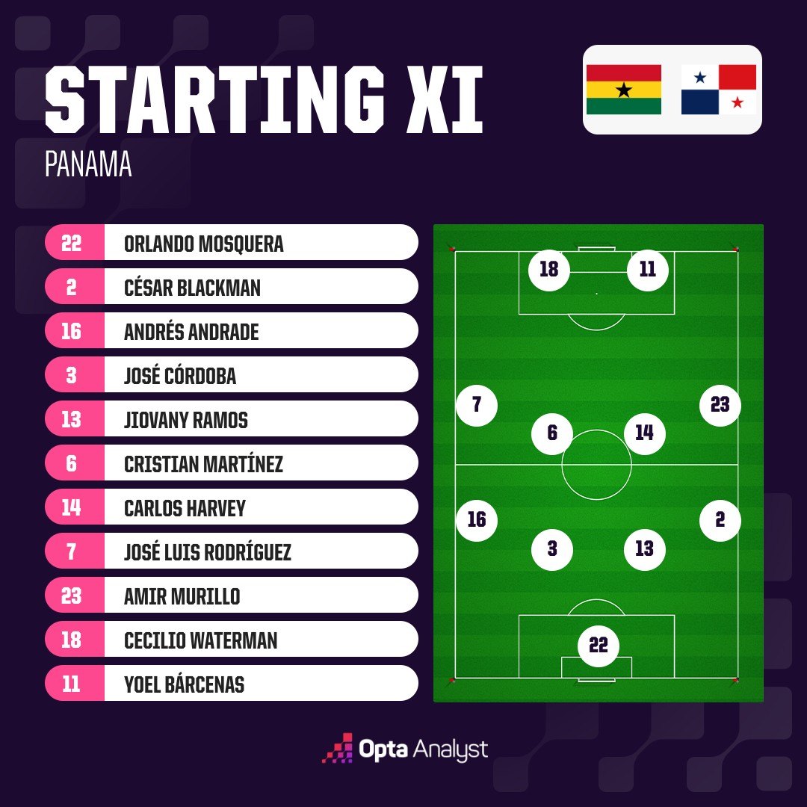
Ghana have kept a clean sheet in the last 3 matches
Ghana have kept a clean sheet in the last 4 home matches
Stuttering Ghana are winless in six consecutive games going into their FIFA World Cup group stage match against Panama on Wednesday at Toronto Stadium.
Both sides are playing their first match of the competition. Ghana played out a 1-1 draw in their last match, a June 2 friendly against Wales at Cardiff City Stadium, stretching their winless streak to six games in all competitions. Caleb Yirenkyi was the only player to net in the draw.
Panama played out a 1-1 draw against Bosnia-Herzegovina in their last game, a June 6 friendly at Energizer Park. Jiovany Ramos was the lone player to score in the draw. In 2026, they have won two, drawn three, and lost two.
Ghana have been indebted to Abdul Fatawu, Jordan Ayew, and Yirenkyi in 2026. They are the team's joint top scorers with one goal apiece. Ramos and Kadir Barría have been Panama's most prolific players this year, each finding the target twice.
In their last six matches in all competitions, Ghana have drawn one and lost five. The Ghanaian side scored three and conceded 13 in that period, scoring first in one of the six contests. All of their goals came after halftime, while their opponents netted four times in the first 45 minutes. The Panamanian side have won two, drawn two and lost two in their last six. The Panamanian side scored 10 and conceded 12 over that period, netting first in three of the six. They had five goals in the first half, while their opponents netted three times before the break.
-
General
Possession 38.0% 37.99862.00262.0% Possession lost in defensive half 29 293131 Possession lost in middle third 58 585555 Duels 114 114115115 Duels success rate 49.1% 49.12349.56549.6% Aerial duels 34 343434 Aerial duels won 61.8% 61.76538.23538.2% Successful dribbles 9 966 Fouls won 11 1199 Offsides 4 411 Corner awarded 2 222 -
Distribution
Passes 352 352583583 Long passes 52 527070 Long passes proportion (%) 14.8% 14.77312.00712.0% Passing accuracy 83.0% 82.95586.27886.3% Passes in opponents' half 187 187232232 Passing accuracy in opponents' half (%) 75.4% 75.40171.55271.6% Total passes in the final third 80 80126126 Passing accuracy in final third (%) 68.8% 68.7561.90561.9% Forward passes 231 231347347 Forward passes (%) 65.6% 65.62559.5259.5% Through balls 0 033 Final third entries 62 626666 Penalty area entries 15 152929 Total open play crosses 11 111919 Crosses 16 162121 Crossing accuracy 25.0% 2519.04819.0% -
Attack
Goals 1 100 Shots 7 71111 Shots on target 2 244 Blocked shots 1 122 Headed shots 3 311 Shots outside the box 1 155 Shots inside the box 6 666 Shots accuracy excluding blocked shots 33.3% 33.33344.44444.4% Shooting accuracy 28.6% 28.57136.36436.4% Key Passes 5 588 -
Defence
Tackles 16 162929 Tackles success rate 56.3% 56.2537.93137.9% Clearances 28 281717 Interceptions 8 855 Recoveries 50 504848 Attacking third recovery 2 233 Defensive third recovery 32 322424 Midfield third recovery 16 162121 Recoveries in attacking half (%) 4.0% 46.256.3% -
Discipline
Fouls conceded 9 91111 Yellow cards 1 122 Red cards 0 000